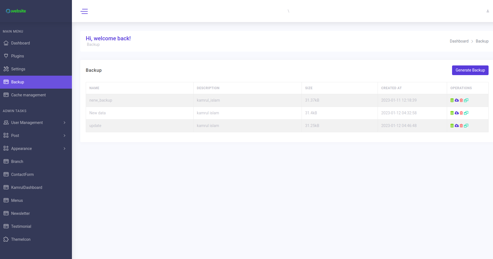

Backup
This plugin is using to backup your website. It will backup uploaded files & database, not full source code.
The backup plugin is just working on MySQL. It’s using mysql command to dump and restore SQL.
Go to Dashboard -> Backups .
Using
Generate Backupclick to generateAfter generate
Downloadthis file
Commands
You can use commands on your localhost or on VPS to quick manage backups.
Create a backup.
php artisan kamrul:backup:create [name of backup]
Ex:
php artisan kamrul:backup:create "Backup latest data" --description="This is a demo backup"
Restore a backup
php artisan kamrul:backup:restore [backup date]
[backup date] is an optional param, if you don’t provide backup date, it will restore the latest backup.
Ex:
php artisan kamrul:backup:restore 2023-04-28 10-05-24
Delete a backup
php artisan kamrul:backup:remove [backup date]
Ex:
php artisan kamrul:backup:remove 2023-04-28 10-05-24
List all backups:
php artisan kamrul:backup:list